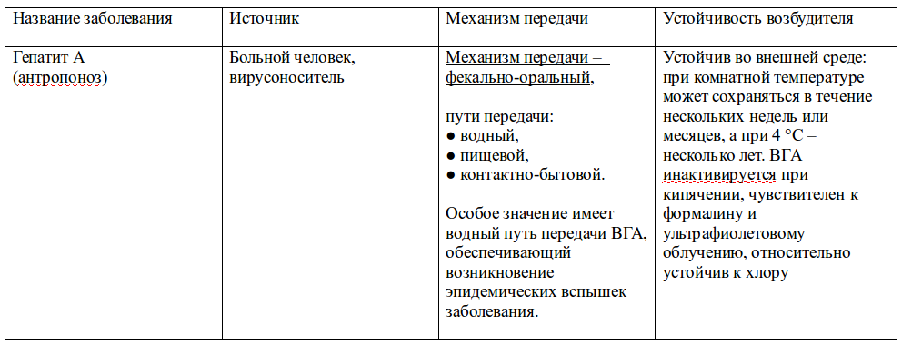
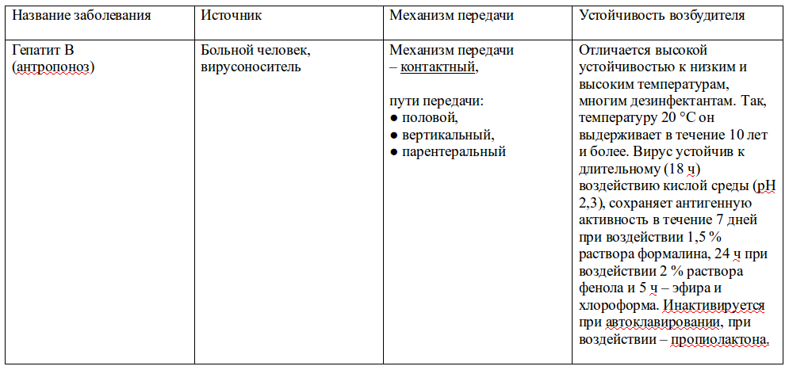
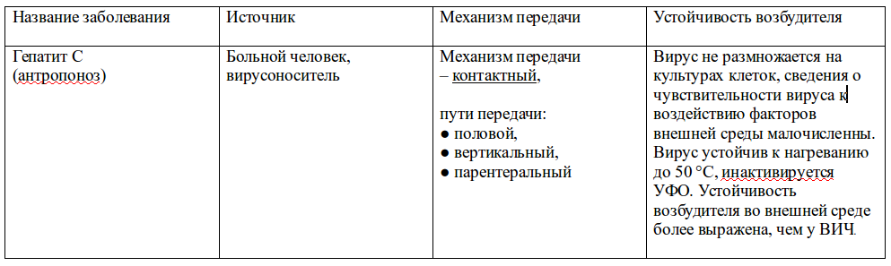
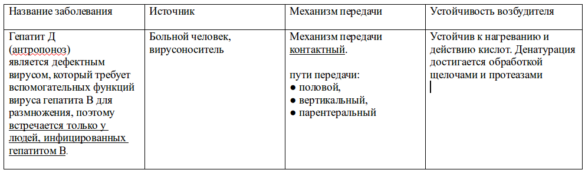
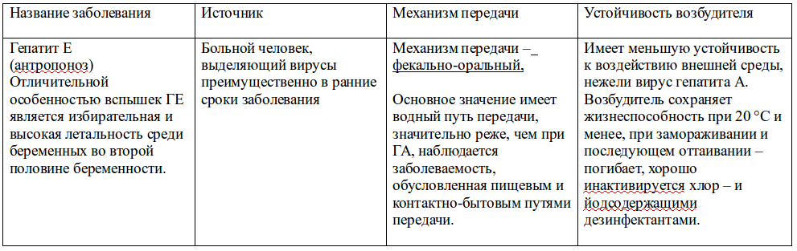
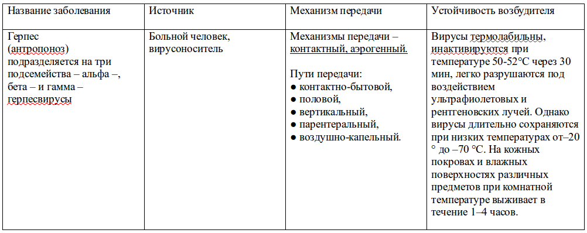
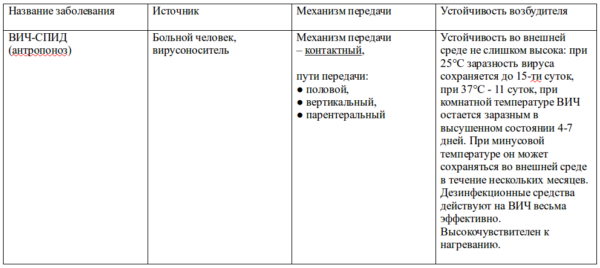
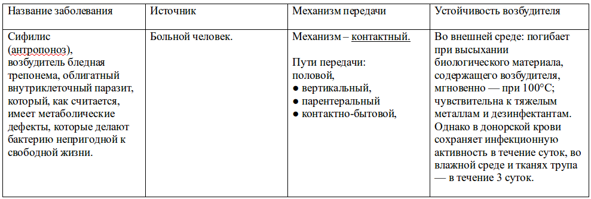

А я их спритиком обрабатываю
«А я их спритиком обрабатываю» - ответила мастер по маникюру и педикюру на мой вопрос: «чем Вы их обрабатываете?», продолжая, выкладывать свой инструментарий из сумочки. После этой фразы я вошла в состояние, что называется «жалюзи опустились». К слову, о самом салоне, действует года 3-4, оснащен современным оборудованием, а рядом со столом мастера стоит даже не гласперленовый стерилизатор (в котором невозможна полная стерилизация инструментов из – за неполного погружения оных), а ультрафиолетовый Germix.
Этот самый случай и подтолкнул меня собрать материал по устойчивости возбудителей некоторых заболеваний, передающихся через кровь и по возможности адаптировав, поделиться им с Вами, а так же рассмотреть способы стерилизации в «полевых условиях» при отсутствии одноразового стерильного материала.
Желающие впечатлиться устойчивостью возбудителей во внешней среде, могут смело приступать к просмотру таблиц. В вдогонку, хочу только заметить, все рассмотренные в таблицах заболевания, являются антропонозами, то есть передаются от больного человека/носителя к человеку. А инактивация – это частичная или полная потеря биологически активным веществом или агентом своей активности.
Интересующиеся терминологией, а Вас я попрошу остаться. В таблицах будут использованы термины механизм передачи и путь передачи, попробуем разобраться, что есть что, минуя справочное бюро викепедии, с точки зрения медицины.
Механизм передачи возбудителя инфекции - эволюционно сложившийся процесс, необходимый для существования возбудителя как вида в природе, включает в себя *3 фазы перемещения возбудителя инфекции от источника инфекции в восприимчивый организм, реализуется различными путями передачи.
* три фазы перемещения возбудителя:
1. выделение возбудителя из источника инфекции.
2. нахождение во внешней среде.
3. внедрение возбудителя в восприимчивый механизм.
Путь передачи инфекции – это форма реализации механизма передачи инфекции от ее источника к восприимчивому организму при участии объектов окружающей среды (факторов передачи).
Во как, да? Другими словами, чтобы представить, как действует механизм передачи инфекции, мы могли бы задаться вопросом: «И как могло сие случиться!??», в отношении же пути передачи инфекции, вопрос мог бы прозвучать так: « И что могло служить тому виной!??»
И сами термины, их немного, большинство из них Вам знакомы:
Водный путь передачи – это путь передачи инфекции через воду зараженную возбудителем инфекционной болезни.
Пищевой путь передачи – это путь передачи инфекции через пищевые продукты, зараженные возбудителем инфекционной болезни.
Контактно – бытовой путь передачи – это путь передачи инфекции через поверхность предметов обихода и/или кожу рук, обсемененную возбудителем инфекционной болезни.
Вертикальный путь передачи – это путь передачи инфекции от крови матери, зараженную возбудителем инфекции, через плаценту к плоду и во время родов.
Парентеральный путь передачи – это путь передачи инфекции, при котором происходит искусственное внедрение или самостоятельное проникновение возбудителя в восприимчивый организм, минуя желудочно-кишечный тракт.
Аэрогенный механизм передачи – это механизм передачи инфекции, при котором заражение происходит, когда возбудитель выделяется из источника при разговоре, кашле, чихании, попадает в воздух, а после через содержащие его частицы жидкости (пыли) внедряется в восприимчивый организм.
Фекально-оральный механизм передачи – это механизм передачи инфекции, при котором заражение происходит, когда возбудитель выделяется из источника через кишечник, и, попав на объекты внешней среды (предметы обихода, пищевые продукты, воду), после внедряется в восприимчивый организм водным, пищевым и контактно-бытовым путями.
Контактный механизм передачи – это механизм передачи инфекции, при котором заражение происходит, когда возбудитель, выделенный с кожи или ее придатков, слизистых оболочек, раневой поверхности источника, внедряется в восприимчивый организм через предметы, с которыми до этого контактировал сам источник инфекции и/или при непосредственном контакте источника с восприимчивым организмом.
*В медицинской литературе Вы можете встретить термины: «перкутанный механизм передачи инфекции» и «артифициальный путь передачи инфекции». Перкутанный механизм – когда возбудитель инфекции выделяется в окружающую среду от источника через любую биологическую субстанцию и внедряется через нарушенные кожные или слизистые покровы восприимчивого организма. Артифициальный путь передачи инфекции – искусственный, при котором возбудитель вводится в восприимчивый организм в процессе различных парентеральных или энтеральных вмешательств (лечебные, диагностические процедуры, пирсинг, тату и т.п.). Но мы забор городить не будем.
Выше перечисленным путям и механизмам передачи инфекции, естественно можно было и проще дать определение, в то же время мне хотелось сделать акцент на 3 фазах перемещения возбудителя.
«А теперь слайды»


http://goo.gl/1XOOQP






Теперь погорим о безопасности, опираясь на отраслевой стандарт (ОСТ 42-21-2-85), определяющий методы, средства и режимы дезинфекции, стерилизации изделий медицинского назначения, закрепленный приказом №770 МЗ СССР от 10.06.1985 г., который дополнен приказом №408 от 12.07.89 года. Пробежимся по основным понятиям, попутно буду приводить примеры, что именно Вы сами можете использовать в «полевых условиях» при отсутствии одноразового стерильного материала.
Выдержка:
«Изделия медицинского назначения, соприкасающиеся с раневой поверхностью, контактирующие с кровью, инъекционными препаратами или слизистыми оболочками пациентов после предварительной дезинфекции, предстерилизационной очистки, подлежат обязательной стерилизации».
Выделяют три этапа обработки изделий медицинского назначения:
I этап – дезинфекция – уничтожение патогенных микроорганизмов и их переносчиков.
II этап – предстерилизационная очистка – удаление загрязнений с изделий мед. назначения перед стерилизацией.
III этап – стерилизация – уничтожение микроорганизмов всех видов, находящихся на всех стадиях.
I этап – дезинфекция
Существуют следующие методы дезинфекции:
• механические,
• физические,
• химические
• комбинированные,
• биологические.
Начинается с ополаскивания водой в отдельной емкости, не под струей воды во избежание аэрозольного инфицирования при контакте струи воды и биоматериала. Затем собственно дезинфекция в дезрастворе при полном погружении инструмента, время выдержки зависит от дезсредства и инфекции.
В домашних условиях можно использовать:
– 4% раствор перекиси водорода, выдержка 90 мин.
– этиловый спирт 70%, выдержка 30 мин.
II этап – предстерилизационная обработка
1. Замачивание изделий в моющем растворе на время определенное инструкцией к каждому конкретному раствору или кипячение в растворе.
2. Мойка каждого изделия в моющем растворе при помощи ерша, щетки, ватно-марлевого тампона.
3. Ополаскивание под проточной водой до исчезновения щелочности - от 5 до 10 минут.
4. Ополаскивание (обессоливание) в дистиллированной воде.
5. Сушка горячим воздухом при температуре 85-90° или на открытом воздухе до полного исчезновения влаги.
Учитывая высокую устойчивость вируса гепатита В, особенно в белковых ассоциациях, предстерилизационная обработка приобретает важное значение.
Существует группа дезсредств, позволяющая проводить дезинфекцию и предстерилизационную очистку одномоментно.
В домашних условиях для одномоментной дезинфекции и предстерилизационной очистки можно использовать содовый р-р 2%:
1. этап – дезинфекция: промыть изделия в холодном растворе. Полностью погрузить изделие в раствор, поставить ёмкость на плитку для кипячения в течение 15 мин с момента закипания.
2. этап – непосредственно предстерилизационная очистка: вымыть каждое изделие в 2 % растворе соды (после охлаждения раствора) при помощи ватного тампона в течение 30 сек.
3. Ополоснуть в проточной воде в течение 5 минут.
4. Ополоснуть в дистиллированной воде в течение 1 минуты.(ну или сразу приступайте к сушке).
5. Высушить при температуре 85 С или на открытом воздухе до полного исчезновения влаги.
III этап – стерилизация
Виды стерилизации:
• Термический.
• Химический.
• Стерилизация ультразвуковая.
• Стерилизация инфракрасным излучением.
• Радиационный (гамма-лучи).
В домашних условиях рассмотрим стерилизацию обжиганием, кипячением и вариант химической стерилизации. Про прокаливание на прямом огне не пишу, так как стальные предметы от этого теряют закалку и ржавеют.
Стерилизация обжиганием недостаточно надежна. Кроме того, при обжигании сильно портятся инструменты, особенно режущие. Обжигание металлических инструментов проводится открытым пламенем. Инструменты кладут в эмалированный тазик или стерилизатор, обливают небольшим количеством (10 мл) спирта и равномерно обжигают.
Стерилизация кипячением. Для стерилизации инструментов пользуются простым стерилизатором, при отсутствии стерилизатора используют любую эмалированную посуду с крышкой. Для стерилизации инструментов кипячением в стерилизатор наливают необходимое количество 2% содового р-ра, доводят до кипения и через 3 – 5 мин с момента его закипания в стерилизатор погружают сетку с предварительно разложенными на ней инструментами. В холодную воду инструмент класть нельзя, так как выделяющийся при нагревании ее кислород быстро окисляет металл. Продолжительность стерилизации инструментов 20-30 мин; время отсчитывают от момента закипания, после погружения сетки с инструментами. Однако режущие инструменты при кипячении в воде тупятся.
Химическая стерилизация:
Для химической стерилизации в соответствии с ОСТ 42-21-2-85 применяют следующие режимы:
6% раствор перекиси водорода:
• при 18 оС в течение 360 мин;
• 50 °С в течение 180 мин, температура р-ра в течение стерилизации не поддерживается.
Небольшое дополнение:
Стерилизацию так же можно проводить 70° спиртом с выдержкой инструмента 2 часа, но спирт данной концентрации вызывает ржавчину. А по поводу спирта с большей концентрации бытует мнение, что такой раствор хуже проникает в глубину бактериальной клетки, следовательно эффект стерилизации снижается.
При сухожаровой стерилизации обычно используют режим 180° – 60 мин.
Стерилизация инструмента обязательна. И именно стерилизация, а не протирание испаряющимся за 10 секунд спиртом для успокоения совести.
Возможно, собранная мной информация будет полезной для тех, кто любит нырять, где кишат крокодилы, и плавает, плавает за буйки.


Автор: Виктория Blackberry.
(собственность vampirecommunity.ru)
[Наверх]